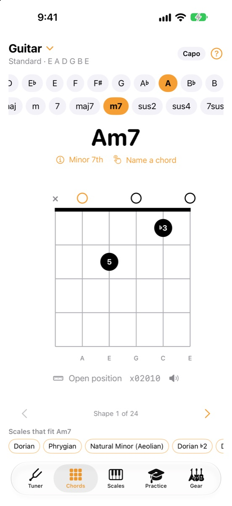
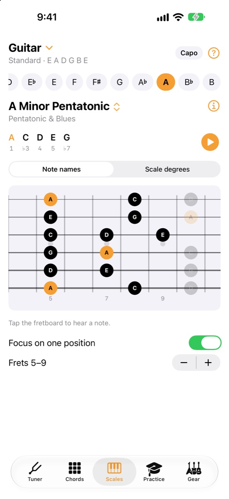
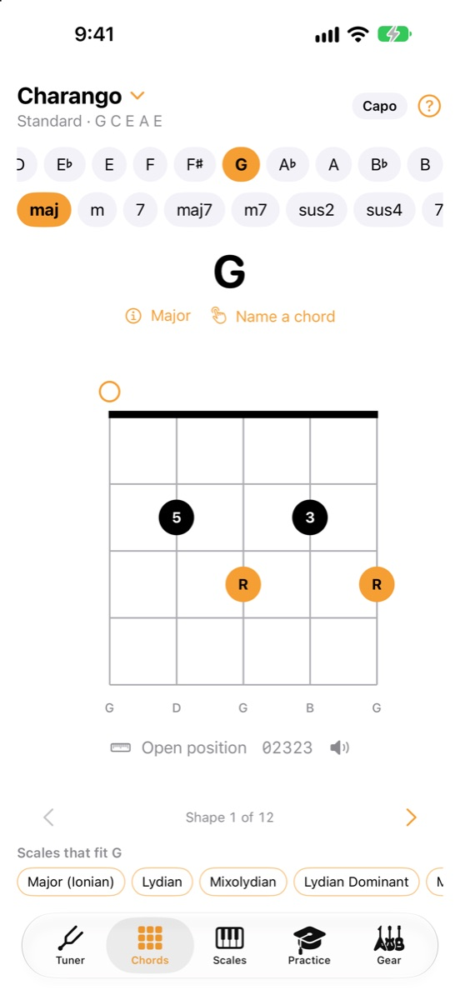
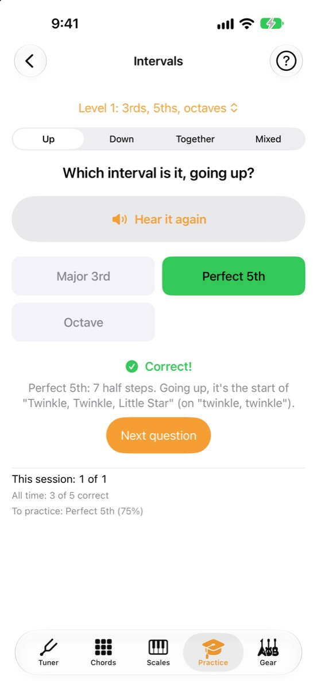
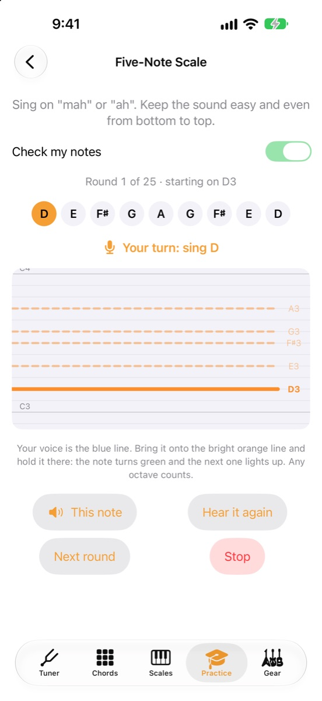

See it in under a minute
Tuning, obscure chords, rhythms from around the world, and fingerings that follow every note. Turn the sound on: that's the app itself playing.
Everything you practice with, in one app
Built for players of every level, with a step-by-step guide on every screen and musical terms explained in plain language.

Every way to play every chord
17 chord types in every key, with all the practical shapes for any tuning, easiest first. Tap a shape to hear it.

60+ scales, with their stories
Modes, pentatonics, blues and scales from Spain to Japan, each with what it sounds like, where it comes from and where you'll hear it.

The instruments other apps forget
Paired strings, octave pairs and re-entrant tunings handled properly, so charango, cuatro and tiple chords come out right.

Train your ear
Name intervals, chord types, scales and notes in a key, from beginner to advanced, with a tip after every answer.

Warm up your voice
Find your range, then sing guided warmups that listen as you sing and climb through your voice a half step at a time.
And the little things
Capo support, left-handed mode, a dim red Stage mode for dark rooms, string-change reminders, and Do-Re-Mi note names.
Ready for band and orchestra
For woodwind and brass players in concert band, marching band and orchestra, and the directors and parents who help them practice.
- A tuner that reads in your key. Clarinet, trumpet, sax and horn players see the note as written on their part, with concert pitch alongside.
- Band tuning notes. Play concert B♭ or concert A, shown as the note you'd read.
- Scales on the staff. Every scale written out in your instrument's key and kept within its range.
- Learn to read music. A plain-language guide to the grand staff, then note-reading practice from the first few notes to ledger lines and key signatures.
More ways to practice
The tools around the tuner: keep time, hear yourself, and look after what you play.
- Metronome and drone. Tap a tempo, set subdivisions and accents, and hold a steady drone to tune long notes against.
- A recorder with up to 4 layers. As simple as a voice memo, with timing calibration for AirPods and other Bluetooth headphones. Recordings stay on your device unless you share them.
- Practice log and learning paths. Your minutes and streak are counted for you, and step-by-step paths show what to do next.
- Instrument guide. What your instrument is, what its parts do, where it's from and where it's heard.
- Restringing and care guides. Plain steps for looking after your instrument, and what to do how often.
- Real instrument sounds. Recorded sounds for guitars, bass, violin, viola, cello, pianos, organ, harpsichord and most winds and brass, with a synthesized tone on the other instruments until they're recorded.
63 instruments, from the Andes to the marching field
String instruments come with their standard tuning, common alternates and every chord shape. Winds and brass come in each version players use. Keyboards and accordions get chords and scales on the keys. And there are tools for your voice. Don't see your string instrument? Build it in the app.
Strings
- Guitar
- 7-string guitar
- 12-string guitar
- Baritone guitar
- Tenor guitar
- Requinto
- Bass
- 5-string bass
- Ukulele
- Baritone ukulele
- Mandolin
- Mandola
- Octave mandolin
- Banjo
- Tenor banjo
- Charango
- Ronroco
- Venezuelan cuatro
- Puerto Rican cuatro
- Cuban tres
- Colombian tiple
- Bandola llanera
- Cavaquinho
- Viola caipira
- Irish bouzouki
- Greek bouzouki
- Balalaika
- Violin
- Viola
- Cello
Woodwinds
- Flute
- Piccolo
- Oboe
- English horn
- Clarinet (B♭, A, E♭)
- Bass clarinet
- Bassoon
- Soprano sax
- Alto sax
- Tenor sax
- Baritone sax
- Recorder
Brass
- Trumpet
- French horn
- Mellophone
- Trombone
- Euphonium
- Baritone horn
- Marching baritone
- Sousaphone
- Tuba
Keyboards and accordions
- Piano
- Digital piano
- Organ
- Harpsichord
- Electric piano
- Harmonium
- Melodica
- Piano accordion
- Button accordion
- Bandoneón
- Concertina